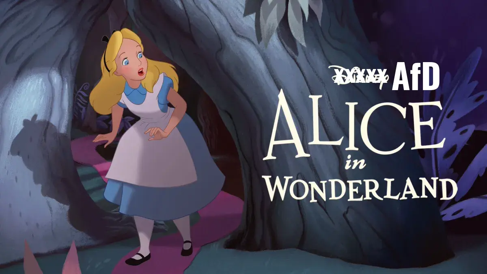
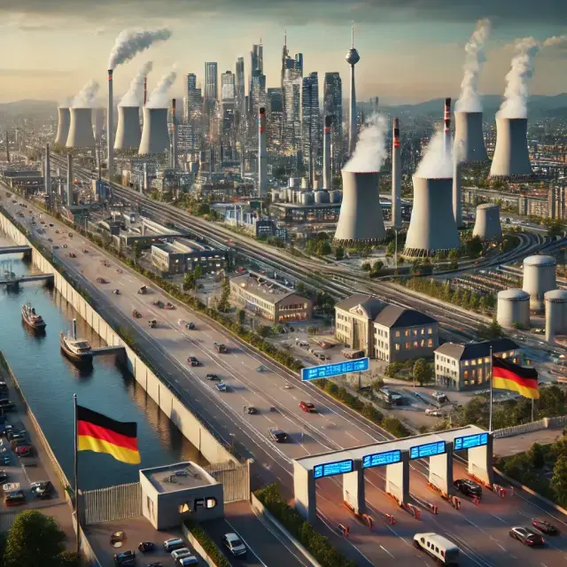
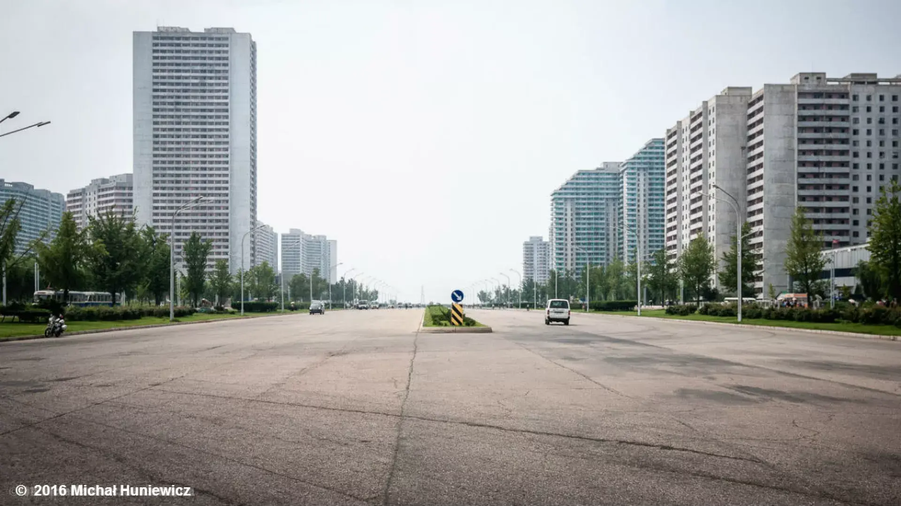
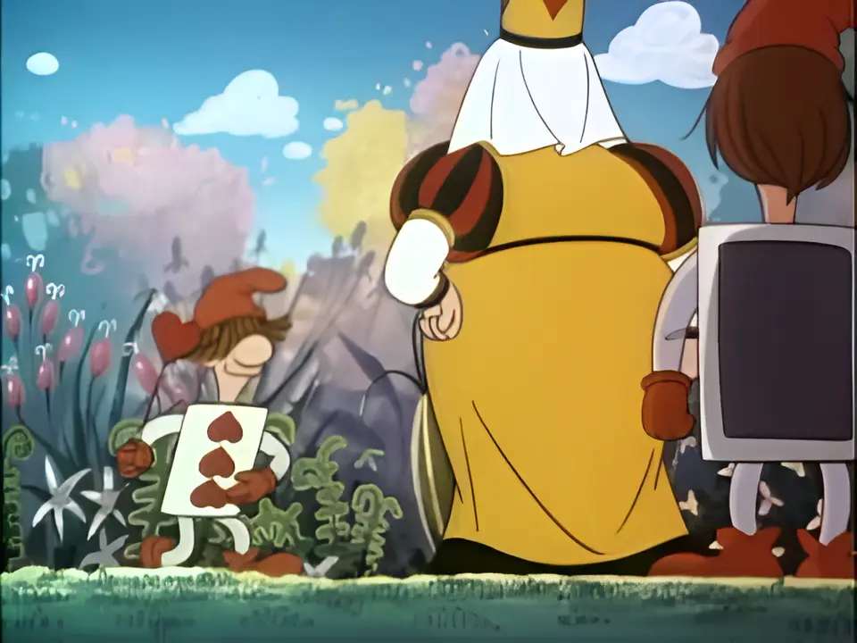

Alice au pays des merveilles

Blog, 13/01/2025, par Sven Franck (in english , in deutsch)
Quel début de campagne ! Après qu’Alice Weidel a déjà pu établir de nouvelles normes en matière de relativisation lors d’un récent tête-à-tête avec Elon Musk, l’AfD s’est récemment réunie à Riesa, en Saxe, pour désigner Alice Weidel comme candidate à la chancellerie et approuver son programme pour les élections au Bundestag. Vu ce que ce programme prévoit pour l’Allemagne - sortie de l'énergie éolienne, déportations et bien sur le Dexit, je me demande, indépendamment du contexte historique déplacé, si le slogan choisi, "Alice pour l’Allemagne", ne serait pas plutôt une imposture pour "Alice au Pays des Merveilles". Pourquoi ? Explorons ensemble ce nouveau Pays des Merveilles allemand.
L'élimination des éoliennes

Pour ceux qui n’ont pas la patience de lire un programme électoral, l’IA est là pour vous aider : sur Bundestagswahl.ai, les programmes des différents partis sont résumés en une seule image par l'Intelligence Artificielle. Comme lorsque nous rêvons, l’IA comprend une certaine ambiguïté : profitons donc de cette ambiguïté et rêvons que nous passons le contrôle d'immigration et les pancartes "Interdit d’entrer" pour découvrir ce Pays des Merveilles.
Ce qui saute aux yeux immédiatement : en Allemagne, le vent souffle fort. Quel dommage, qu'il n’y ait plus une seule éolienne. L’AfD les a démantelées en priorité et – dans un rare moment de conscience écologique – les a réutilisées pour construire un mur autour du pays. Malheureusement, après l’abandon précipité du nucléaire par la CDU, l’arrêt brutal de l’énergie éolienne sous l’AfD a réduit la production d’énergie allemande par environ 36 % (chiffres de 2024). Les fournisseurs d’énergie allemands ont clairement indiqué que les centrales nucléaires en cour de démantèlement ne peuvent pas être réactivées et que la construction de nouvelles installations, dans le meilleur des cas (rappelons-nous des échecs comme BER et Stuttgart21), prendrait au moins dix ans. Alors, dans le Pays des Merveilles d’Alice, l’industrie allemande, malgré un retour au charbon et à l’exploitation minière, est souvent plongée dans le noir.
L'Allemagne est devenue un pays sans un bruit. Les centres-villes ne sont pas plus animés. Les commerces, bars et restaurants sont fermés. Après la pandémie, trouver du personnel était déjà difficile. Mais avec la première vague de "remigration", l’AfD a expulsé les travailleurs de première ligne qui maintenaient le quotidien en marche, des cuisines aux comptoirs. La famille idéale, selon l’AfD – un homme, une femme, un enfant – reste insuffisante pour stabiliser la population et malgré l’interdiction de l’avortement et des contraceptifs, les coupures de courant régulières n’incitent pas les couples à se reproduire. Absence de merveilles: sans immigration ni enfants, l’économie allemande s’essouffle rapidement, et les retraites de la population vieillissante s’épuisent. Peu importe : bien que les maisons de retraite aient de nombreux lits disponibles, sans personnel soignant – déjà en pénurie avant la remigration – ces lits restent vides. La population allemande vieillira donc à domicile, dans la lueur de leurs bougies de chevet.
Wenn ich König(in) von Deutschland wär (l'original)

Sans électricité, la gigafactory d'Elon à Brandenburg a également rapidement fermé. Selon Elon, la conduite autonome n'était pas non plus réalisable en Allemagne en raison du manque de routes droites dans les villes traditionnelles. Dommage que pour un renouvellement urbain à grande échelle et des infrastructures à la manière d'Albert Speer, le Wonderland Allemagne manque des ouvriers du bâtiment d'Europe de l'Est qu'elle a expulsés après être arrivée au pouvoir. Pas de livreurs Deliveroo, pas de bus urbains : les rues sont aussi désertes que les trottoirs. L’ambiance rappelle un peu la Corée du Nord.
En parlant de la Corée du Nord, l’Allemagne est également devenue un peu plus 'nord-coréenne'. Bien que cela n'ait pas figuré dans le programme de l’AfD, Alice a tout de même exprimé sa gratitude envers ce pays, qui a détaché des soldats venus de Russie et d'Ukraine pour maintenir l’ordre public. Pour l’industrie comme pour la santé, l’Allemagne dépend désormais de ces nouveaux partenaires après la fuite de ses talents vers d’autres pays européens.
Bien entendu, L’Allemagne du Pays des Merveilles est désormais au centre de l’Europe, mais pas avec elle. Déconnectée du réseau électrique européen comme par un chalutier russe, avec l'Erussmus au lieu d'Erasmus et avec sa monnaie, l’AfD-Mark, ne vaut qu’un millième d’euro. Quant à l’étoile allemande, arrachée du drapeau européen par l’AfD, elle n’est plus qu’un lointain souvenir. L'Allemagne est devenue spectatrice sur la scène internationale tandis que d'autres superpuissances décident de son destin. "Mission accomplie" pour Elon Musk et Donald Trump, un fait que même le bruit de fond constant de la nouvelle 'Nouvelle Vague allemande' ne peut pas masquer, alors que la réalité, celle d'avoir été manipulés, s'impose à tout le monde à travers le pays. Juste un peu trop tard.
Alice, Alice, where the f*** is Alice?

Quant à Alice ? Elle a d'abord joué la Reine de Cœur "bleue", avec la remigration comme version "soft" de l'originale rouge. Mais, rattrapée par les esprits qu'elle avait invoqués, elle s'est réfugiée en Suisse avec sa compagne, la famille peu "prototypique" de "femme, femme, enfant, enfant", et parle de moins en moins de ce Pays des Merveilles.
Soyons francs : Il n'y a pas de Pays des Merveilles. Et Alice le sait. Plus nous sommes naïfs, plus les coups portés à nos valeurs sont violents.
L'Allemagne n'est pas un cas isolé en Europe. Comme ailleurs, la mauvaise politique ne peut rivaliser avec le "programme du Pays des Merveilles" de l'extrême droite. Comme la Hongrie, l'Italie, la Slovaquie, ou maintenant l'Autriche, je crains que chaque État membre de l'UE doive endurer une phase, longue ou courte, où les partis d'extrême droite au pouvoir tentent de démanteler les principes démocratiques et les droits de l'homme sous le prétexte d'un monde meilleur — avant que la population ne revienne à la raison.
À terme, les pays capables de résister à cette tentation nationaliste seront ceux qui réussiront. L'Europe pourrait servir de filet de sécurité, un contrepoids aux tendances nationalistes à l’intérieur de ses frontières et, sur la scène mondiale, une bastion de sécurité et de stabilité contre le néo-impérialisme de Poutine et probablement aussi de Trump. Nous vivons déjà dans une "union de nations" et notre diversité est notre force. D'autres superpuissances le savent et agissent en conséquence, de Musk à TikTok, pour affaiblir l'idée européenne et notre unité.
Alice au pays des merveilles" n'est qu'un des pièges dans lesquels nous risquons de tomber lors des prochaines élections. Ne soyons pas naïfs le 23 février et fermons simplement la boîte de Pandore et l'entrée du pays des merveilles.